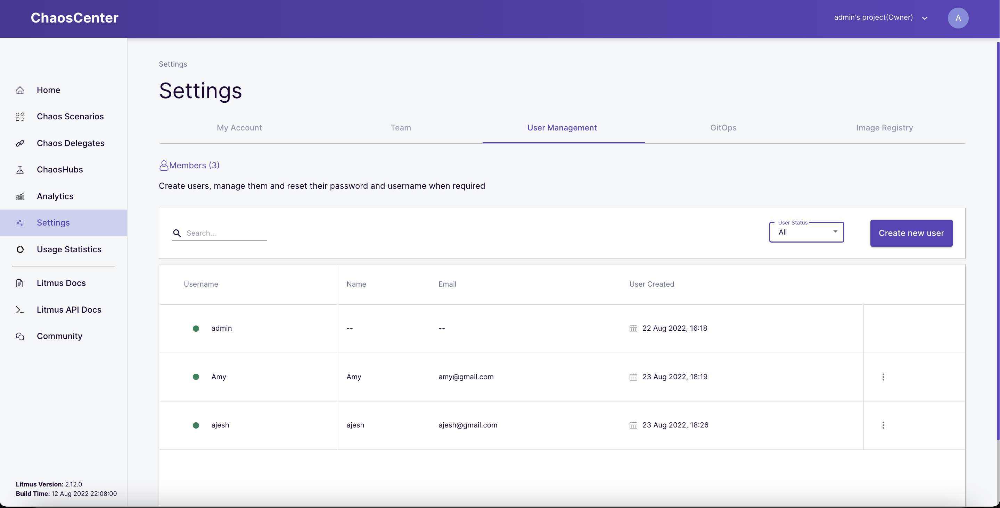
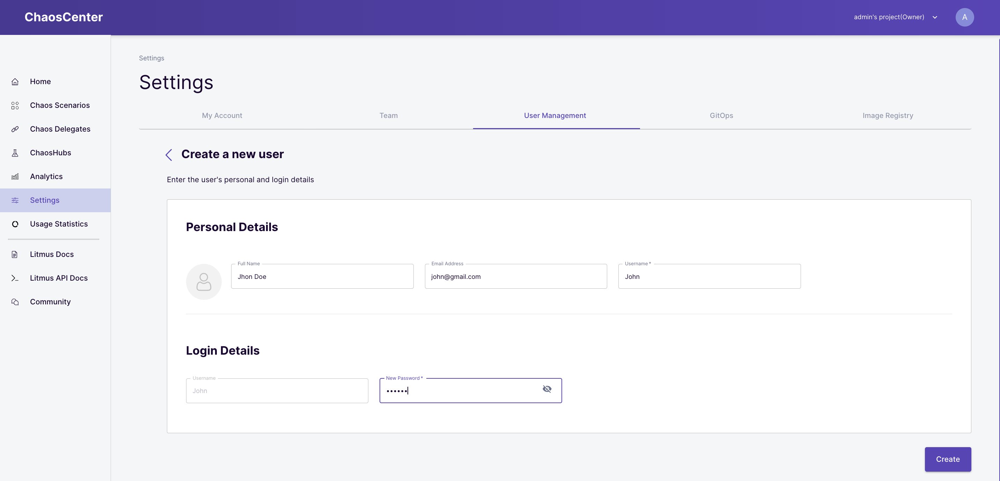
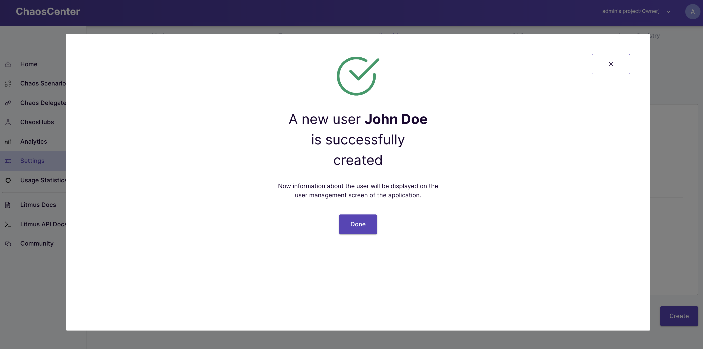
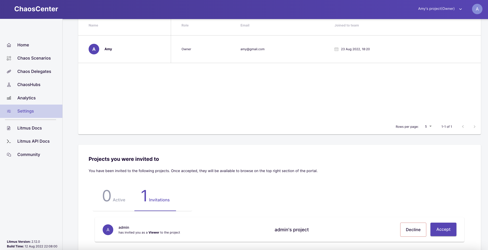
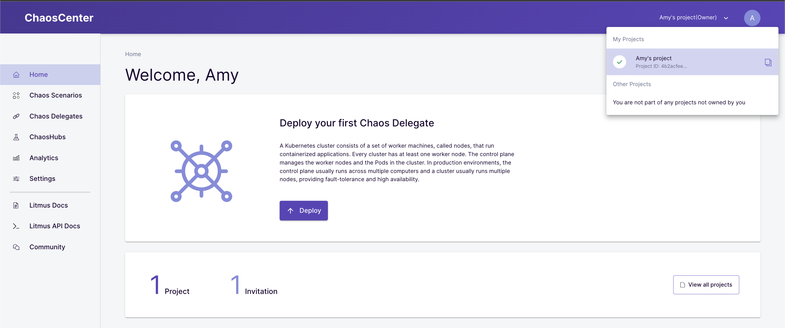

In this tutorial, you will learn about user and role management on the ChaosCenter. We will look at how to manage users and assign roles in a project.
In this tutorial, we would first go over user and role management in Litmus. We would see what different roles can be assigned to different users and the sort of permissions these roles give this user. Lastly, we would see how we can invite new users, assign roles to them, and how to remove them when needed.
It is important that multiple people can access the ChaosCenter and that how each person can be managed and controlled. ChaosCenter supports two-level of hierarchy for users, portal level access and project-level access.
There are two portal-level roles that determine the privilege a user has.
The admin is the default user on the initial setup and has full access to all of the functionalities of the ChaosCenter. They have the highest privilege offered in the portal.
The admin of the ChaosCenter has the exclusive ability to create any number of non-admin users. Non-admin users have the same privileges as an admin except that of user management which is kept exclusive to admins.
Creation of new users can strictly be done by admins. Login to ChaosCenter as an admin, and go to the settings tab. Select the user management tab and click the create new user button.

Add the necessary details of this new user and click the Create button.


The newly created user should have appeared under the list of users in this tab.
The ChaosCenter comes with a project management system that can be used for working on Chaos Scenarios with multiple different projects across different chaos delegates.
=======The ChaosCenter comes with a project management system that can be used for working on chaos scenarios with multiple different projects across different delegates.
>>>>>>> masterOn the ChaosCenter, the admin user has a default project named admin's project that is created on the initial login and has an owner privilege on this project.
Admins can create new users, and each of these users will have their projects created when they log in initially. They will be owners of these created projects and can invite new users to them.
There are three project-level roles;
Owners are the project creators. Only the owner has permission to manage(invite or remove) the members in their project. The owner can schedule chaos scenarios, update chaos scenarios, delete chaos scenarios and view analytics.
Members invited with the editor roles can do everything an owner can do except for managing the project.
Members invited with the viewer role can only view the analytics related to the chaos scenarios but are not permitted to schedule chaos scenarios in the project.
=======Owners are the project creators. Only the owner has permission to manage(invite or remove) the members in their project. The owner can schedule scenarios, update scenarios, delete scenarios and view analytics.
Members invited with the editor roles can do everything an owner can do except for managing the project.
Members invited with the viewer role can only view the analytics related to the scenarios but are not permitted to schedule scenarios in the project.
>>>>>>> masterMore can be read about project permissions here.
Inviting team members allows you to invite new users to collaborate with you on a project. You can invite as many users as you want and choose their roles individually all at once.
Only project owners can invite users to a project and the invitation status of the users is shown along with other necessary details in the invited tab.
To invite a new user, go to the settings, select the team tab and click the invite new member button.
Select all the members you want to invite and assign a role to each of these members from the list of available users presented before you.
When done, click the send invite button to send the invitations. Once the invitation has been successfully sent, you will see a confirmation prompt indicating that the selected users have been invited.
In an event that you want to revoke a sent invitation, or edit the roles set for a specific user when the initial invitation was sent, ChaosCenter allows you to edit the invitation already sent to users.
Navigate to the invited tab, here you would be able to change the role of an invited user or delete the user from the list of invitees by clicking the basket button.
Once the invitation is received, you can take a look at details including the sender's name, role, and project name, then decide whether to accept or decline the invitation.
The invitation is accessible at Settings > Teaming.

Once accepted, you can switch to the project using the header or the View Project option as shown below:

In this tutorial, you were introduced to the user and role management across the ChaosCenter and specific projects. We went over how to create a new user, project-level permissions, how to invite users to projects and set permissions, etc.
Please visit us in our LitmusSlack Channel (in Kubernetes workspace) and tell us how you like LitmusChaos and this tutorial! We are happy to hear your thoughts & suggestions!
Also, make sure to follow us on Twitter to get the latest news on LitmusChaos, our tutorials, and the newest releases!